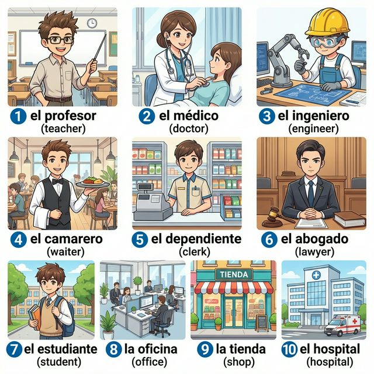
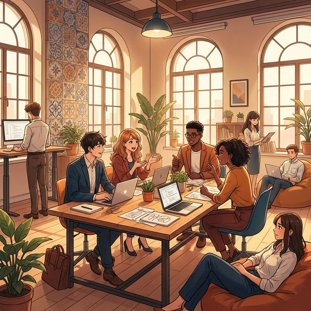

Cervantes: §7 Trabajo: 직업 명칭, 업무 장소 및 기초적인 노동 관련 표현
El trabajo: Nuestra vida diaria (일: 우리의 일상)
우리는 매일 다양한 직업을 가진 사람들을 만납니다. 학교에서는 선생님을, 병원에서는 의사를, 카페에서는 웨이터를 만나죠. 이번 장에서는 스페인어로 다양한 직업의 이름을 배우고, 내가 무엇을 하는 사람인지, 어디에서 일하는지 표현하는 방법을 익힙니다. 또한 규칙 동사 'trabajar(일하다)'의 변화를 통해 일상적인 업무 활동을 말해봅니다. 스페인의 독특한 업무 문화와 열정적인 직업 세계로 함께 들어가 볼까요?
학습 목표
- 주요 직업 명칭 및 업무 장소 어휘 15개 이상 습득
- 'trabajar(일하다)' 동사의 현재 시제 변화 및 활용
- 직업을 묻고 답하는 필수 패턴 익히기 (¿A qué te dedicas?)
- 스페인의 전형적인 업무 시간과 직장 문화 이해
모던한 애니메이션 스타일로 표현된 다양한 직업의 세계입니다. 번호와 매칭되는 단어를 확인하며 필수 어휘들을 익혀보세요.

| # | Spanish | English Bridge | Korean Tip |
|---|---|---|---|
| 1 | el profesor / la profesora | Professor ✅ | 선생님 / 교수님 |
| 2 | el médico / la médica | Medical (related) | 의사 |
| 3 | el ingeniero / la ingeniera | Engineer ✅ | 엔지니어 |
| 4 | el camarero / la camarera | — | 웨이터 / 식당 종업원 |
| 5 | el dependiente / la dependienta | — | 점원 (상점 직원) |
| 6 | el abogado / la abogada | Advocate (legal) | 변호사 |
| 7 | el estudiante / la estudiante | Student ✅ | 학생 |
| 8 | la oficina | Office ✅ | 사무실 |
| 9 | la tienda | — | 상점 / 가게 |
| 10 | el hospital | Hospital ✅ (Perfect Cognate) | 병원 |
✅ 표시된 단어는 영어와 어원의 뿌리가 같은 'Cognates'입니다.
직업과 관련된 대화에서 가장 많이 사용되는 핵심 패턴입니다.
A. 직업 묻고 답하기
- ¿A qué te dedicas? (What do you do? / 무슨 일을 하시나요?)
- ¿Cuál es tu profesión? (What is your profession? / 직업이 무엇인가요?)
- Soy médico. (I am a doctor. / 저는 의사입니다.)
- Trabajo como camarero. (I work as a waiter. / 저는 웨이터로 일해요.)
B. 일하는 장소 표현하기
- ¿Dónde trabajas? (Where do you work? / 어디에서 일하세요?)
- Trabajo en una oficina. (I work in an office. / 저는 사무실에서 일합니다.)
- Mi empresa está en Madrid. (My company is in Madrid. / 제 회사는 마드리드에 있어요.)
- Trabajo desde casa. (I work from home. / 저는 재택근무를 합니다.)
직업을 표현할 때 꼭 필요한 'Ser' 동사의 복습과 'Trabajar' 동사의 활용을 배워봅시다.
주어의 신분이나 직업을 나타낼 때는 Ser 동사를 사용합니다. 이때 직업 앞에 관사(un, una)를 생략하는 것이 표준입니다.
- Yo soy profesor. (나는 선생님이다.)
- Ella es ingeniera. (그녀는 엔지니어이다.)
'trabajar'는 전형적인 -ar 규칙 동사입니다.
| 인칭 | Trabajar | 영어 매핑 (to work) |
| :--- | :--- | :--- |
| Yo | trabajo | I work |
| Tú | trabajas | You work |
| Él/Ella/Ud. | trabaja | He/She/You work |
| Nosotros/as | trabajamos | We work |
| Vosotros/as | trabajáis | You all work |
| Ellos/Ellas/Uds. | trabajan | They/You all work |
Korean Tip!
'Dedicarse a'(~에 종사하다)라는 표현도 자주 씁니다. 만약 "저는 마케팅 분야에 종사해요"라고 하고 싶다면 "Me dedico al marketing"이라고 말해보세요. 훨씬 전문적인 느낌을 줍니다!
스페인의 직장 생활은 어떤 분위기일까요?

El horario de trabajo en España a menudo es diferente al de otros países de Europa. Muchas oficinas abren a las 9:00 y cierran a las 18:00 o 19:00, con una pausa larga para almorzar (la comida) entre las 14:00 y las 16:00. Este tiempo es ideal para socializar con los compañeros de trabajo.
Aunque el concepto de la siesta está cambiando, la importancia de equilibrar el trabajo y la vida personal sigue siendo fundamental. Los españoles valoran mucho el café de la mañana y las reuniones informales. En las ciudades modernas como Madrid o Barcelona, el ambiente es dinámico, internacional y muy colaborativo.
[한국어 번역]
스페인의 업무 시간은 유럽의 다른 나라들과 종종 다릅니다. 많은 사무실이 오전 9시에 열고 오후 6시나 7시에 닫는데, 오후 2시에서 4시 사이에 긴 점심시간(la comida)을 갖습니다. 이 시간은 직장 동료들과 사교 활동을 하기에 이상적입니다.
낮잠(siesta)의 개념이 변하고는 있지만, 일과 개인 생활의 균형(워라밸)을 중요하게 여기는 가치는 여전히 기본입니다. 스페인 사람들은 아침 커피 타임과 비격식적인 미팅을 매우 소중히 여깁니다. 마드리드나 바르셀로나 같은 현대적인 도시에서 업무 분위기는 역동적이고 국제적이며 매우 협력적입니다.
A. Match the job with the place (직업과 어울리는 장소를 연결하세요)
| 좌측 (직업) | 우측 (장소) |
|---|---|
| 1. El médico | a. El restaurante |
| 2. El profesor | b. El hospital |
| 3. El camarero | c. La tienda |
| 4. El dependiente | d. La escuela |
| 5. El abogado | e. La oficina |
B. 동사 변형 연습 (괄호 안의 주어에 맞게 'trabajar'를 변형하세요)
C. 번역 연습 (주어진 문장을 스페인어로 번역하세요)
Mi trabajo ideal (나의 이상적인 직업)
¡Hola! Me llamo Carlos y soy de Sevilla. Trabajo como arquitecto en una oficina pequeña pero muy bonita. Mi trabajo es muy creativo y me gusta mucho. Empiezo a trabajar a las nueve de la mañana. A las dos, voy a un restaurante con mis compañeros para comer. Después, trabajamos hasta las seis de la tarde. No trabajo los sábados ni los domingos. En mi tiempo libre, me gusta pasear por la ciudad. Mi hermana es médica y trabaja en el hospital central. Ella trabaja muchas horas, pero está muy contenta.
Questions:
1. Carlos의 직업은 무엇인가요? (What is Carlos's job?)
- ............................................................
2. Carlos의 누나(여동생)는 어디에서 일하나요? (Where does Carlos's sister work?)
- ............................................................
[한국어 번역]
안녕하세요! 제 이름은 카를로스이고 세비야 출신입니다. 저는 작지만 매우 예쁜 사무실에서 건축가로 일합니다. 제 일은 매우 창의적이고 저는 제 일을 아주 좋아합니다. 저는 아침 9시에 일을 시작합니다. 2시에는 동료들과 함께 점심을 먹으러 식당에 갑니다. 그 후, 우리는 오후 6시까지 일합니다. 저는 토요일과 일요일에는 일하지 않습니다. 제 자유 시간에 저는 도시를 산책하는 것을 좋아합니다. 제 누나(여동생)는 의사이고 중앙 병원에서 일합니다. 그녀는 오랜 시간 일하지만 매우 기뻐합니다.
En la cafetería (카페테리아에서)
Situación: Elena conoce a un nuevo amigo, Pablo, y hablan sobre sus trabajos.
상황: 엘레나가 새로운 친구 파블로를 만나 서로의 직업에 대해 이야기합니다.
| Spanish | Korean |
|---|---|
| Elena: Hola, soy Elena. ¿Y tú? | 엘레나: 안녕, 난 엘레나야. 너는? |
| Pablo: Hola Elena, me llamo Pablo. Encantado. | 파블로: 안녕 엘레나, 내 이름은 파블로야. 반가워. |
| Elena: Igualmente. ¿A qué te dedicas, Pablo? | 엘레나: 나도 반가워. 파블로, 무슨 일을 하니? |
| Pablo: Soy ingeniero. Trabajo en una empresa de tecnología. ¿Y tú? | 파블로: 난 엔지니어이야. 기술 회사에서 일해. 너는? |
| Elena: Yo soy estudiante de medicina, pero trabajo los fines de semana como camarera. | 엘레나: 난 의대생이지만, 주말에는 웨이터로 일해. |
| Pablo: ¡Qué bien! ¿Dónde trabajas? | 파블로: 멋지다! 어디에서 일하는데? |
| Elena: Trabajo en un restaurante italiano cerca de aquí. | 엘레나: 여기 근처에 있는 이탈리아 식당에서 일해. |
이번 장의 핵심 내용을 복습해 보세요.
- [ ] 10개 이상의 직업 명칭을 스페인어로 말할 수 있나요?
- [ ] 'Trabajar' 동사를 인칭에 맞게 완벽하게 변화시킬 수 있나요?
- [ ] 직업을 말할 때 관사를 생략해야 한다는 규칙을 기억하나요?
- [ ] 스페인의 점심시간 특징과 직장 분위기를 이해했나요?
¡Buen trabajo! 오늘 여러분은 우리 삶의 중요한 부분인 '일'에 대해 말하는 법을 배웠습니다. "Soy médico", "Trabajo en una oficina"와 같은 짧은 문장들이 모여 여러분의 정체성을 스페인어로 표현할 수 있게 해줍니다. 직업 어휘는 앞으로 더 넓은 세상을 이해하는 데 큰 도움이 될 것입니다. 다음 장에서는 우리의 삶을 더욱 풍요롭게 해주는 '취미와 여가 생활'에 대해 깊이 있게 다뤄보겠습니다. ¡Hasta pronto!
6. Práctica - A. Match the job with the place
1-b / 2-d / 3-a / 4-c / 5-e
6. Práctica - B. 동사 변형 연습
1. trabajo / 2. trabajas / 3. trabajamos / 4. trabajan / 5. trabaja
6. Práctica - C. 번역 연습
1. Soy abogado. (또는 Soy abogada.)
2. ¿A qué te dedicas? (또는 ¿Cuál es tu profesión?)
3. Trabajamos en Madrid.
4. Mi amigo es ingeniero. (또는 Mi amiga es ingeniera.)
5. ¿Trabajas en un hospital?
7. Lectura Questions
1. 건축가 (Arquitecto).
2. 중앙 병원 (Hospital central).